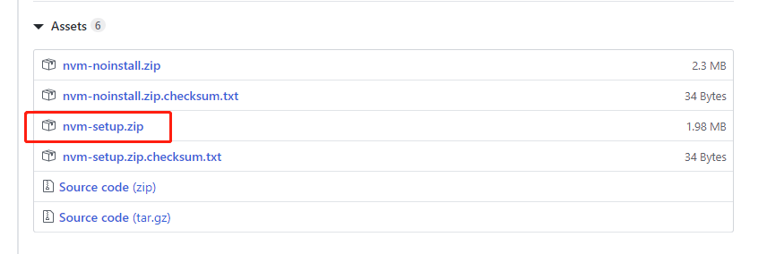
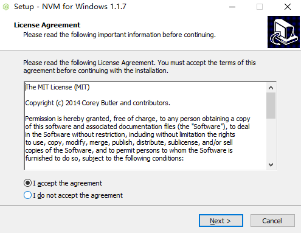
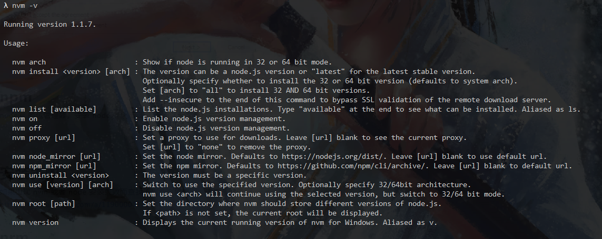
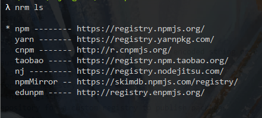
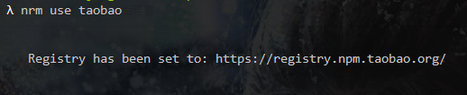
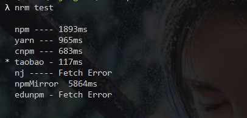
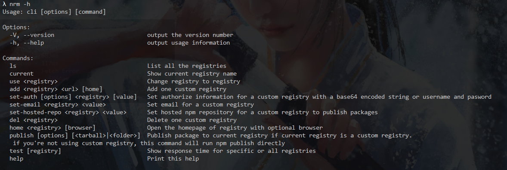

Node.js version manager ，推荐使用它来安装 node.js 。
进入 下载页 找到安装包：

跟着引导安装即可。

输入 nvm -v 查看是否安装成功，成功的话如下图所示。如果提示找不到命令，请看这里。

# 安装指定版本的 node
nvm install 版本号
# 删除指定版本的 node
nvm uninstall 版本号
# 切换使用指定版本的 node
nvm use 版本号
# 查看本地安装的所有 node 版本
nvm list 或者 nvm lsNode Package Manager，node.js 的包管理器，安装 node.js 之后自带 npm，无需单独安装。
输入 npm -v 来查看当前 npm 的版本。
如果出现 nvm 或者 node 安装失败而查找不到命令的情况，请查看这里：https://segmentfault.com/a/1190000011114680
NPM registry manager ，项目地址 。
由于国内使用 npm 官方源来安装包的时候比较慢，所以经常会需要修改 npm 源地址。npm 倒是提供了修改源的方法，但是 nrm 更加方便快捷。
# 使用 npm 全局安装
npm install -g nrmnrm ls
nrm use taobao
nrm test
nrm -h